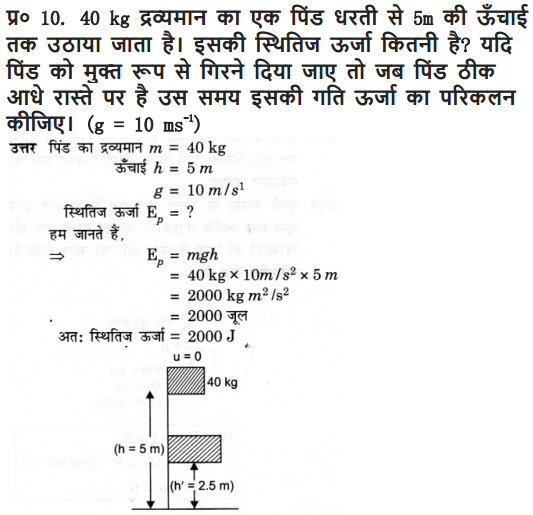
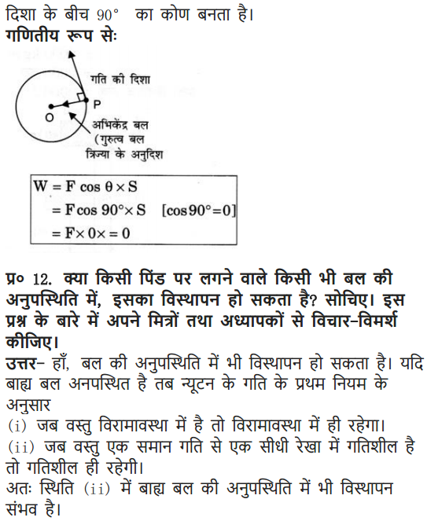

NCERT Solutions Class 9 Science Chapter 11 Work, Power And Energy – Here are all the NCERT solutions for Class 9 Science Chapter 11. This solution contains questions, answers, images, step by step explanations of the complete Chapter 11 titled Work, Power And Energy of Science taught in class 9. If you are a student of class 9 who is using NCERT Textbook to study Science, then you must come across Chapter 11 Work, Power And Energy. After you have studied lesson, you must be looking for answers of its questions. Here you can get complete NCERT Solutions for Class 9 Science Chapter 11 Work, Power And Energy in one place. For a better understanding of this chapter, you should also see Chapter 11 Work, Power And Energy Class 9 notes , Science.
NCERT Solutions for Class 9 Science Chapter 11 Work Power and Energy
Topics and Sub Topics in Class 9 Science Chapter 11 Work Power and Energy:
- Work Power and Energy
- Work
- Energy
- Rate of Doing Work
These solutions are part of NCERT Solutions for Class 9 Science. Here we have given Class 9 NCERT Science Textbook Solutions for Chapter 11 Work Power and Energy
NCERT Textbook for Class 9 Science – Page 148
Q1: A force of 7 N acts on an object. The displacement is, say 8 m, in the direction of the force. Let us take it that the force acts on the object through the displacement. What is the work done in this case?
More Resources for CBSE Class 9
- NCERT Solutions
- NCERT Solutions Class 9 Maths
- NCERT Solutions Class 9 Social Science
- NCERT Solutions Class 9 English
- NCERT Solutions Class 9 Hindi
- NCERT Solutions Class 9 Sanskrit
- NCERT Solutions Class 9 IT
- RD Sharma Class 9 Solutions
Class 9 Science NCERT Textbook – Page 149
Q1. When do we say that work is done?
Work is said to be done when a force causes displacement of an object in the direction of applied force.
Q2. Write an expression for the work done when a force is acting on an object in the direction of its displacement.
Work done = Force x Displacement
Q3. Define 1J of work.
When a force of IN causes a displacement of 1m, in its own direction the work done is said to be one joule.
Q4. A pair of bullocks exerts a force of 140 N on a plough. The field being ploughed is 15 m long. How much work is done in ploughing the length of the field?
Work done = Force x Displacement = 140 x 15 = 2,100 J
Formulae Handbook for Class 9 Maths and ScienceEducational Loans in India
NCERT Textbook for Class 9 Science – Page 152
Q1. What is the kinetic energy of an object?
The energy possessed by a body by virtue of its motion is called kinetic energy.
Q2. Write an expression for the kinetic energy of an object.
Q3. The kinetic energy of an object of mass, m moving with a velocity of 5 ms-1 is 25 J. What will be its kinetic energy when its velocity is doubled? What will be its kinetic energy when its velocity is increased three times?
Class 9 Science NCERT Textbook – Page 156
Q1. What is power?
Power is defined as the rate of doing work
Q2. Define 1 watt of power.
When a work of 1 joule is done in 1 s, the power is said to be one watt.
Q3. A lamp consumes 1000 J of electrical energy in 10 s. What is its power?
Given W = 1000J, t = 10s, P =?
We know, P = W/t = 1000/10 = 100W
Q4. Define average power.
When a machine or person does different amounts of work or uses energy in different intervals of time, the ratio between the total work or energy consumed to the total time is average power.
NCERT Textbook for Class 9 Science – Page 158
Q1. Look at the activities listed below. Reason out whether or not work is done in the light of your understanding of the term ‘work’.
(a) Suma is swimming in a pond.
(b) A donkey is carrying a load on its back.
(c) A wind mill is lifting water from a well.
(d) A green plant is carrying out photosynthesis.
(e) An engine is pulling a train.
(f) Food grains are getting dried in the sun.
(g) A sailboat is moving due to wind energy.
Work is done whenever the given conditions are satisfied:
(i) A force acts on a body.
(ii) There is a displacement of the body.
(a) While swimming, Suma applies a force to push the water backwards. Therefore, Suma swims in the forward direction caused by the forward reaction of water. Here, the force causes a displacement. Hence, work is done by Seema while swimming.
(b) While carrying a load, the donkey has to apply a force in the upward direction. But, displacement of the load is in the forward direction. Since, displacement is perpendicular to force, the work done is zero.
(c) A wind mill works against the gravitational force to lift water. Hence, work is done by the wind mill in lifting water from the well.
(d) In this case, there is no displacement of the leaves of the plant. Therefore, the work done is zero.
(e) An engine applies force to pull the train. This allows the train to move in the direction of force. Therefore, there is a displacement in the train in the same direction. Hence, work is done by the engine on the train.
(f) Food grains do not move in the presence of solar energy. Hence, the work done is zero during the process of food grains getting dried in the Sun.
(g) Wind energy applies a force on the sailboat to push it in the forward direction. Therefore, there is a displacement in the boat in the direction of force. Hence, work is done by wind on the boat.
Q2. An object thrown at a certain angle to the ground moves in a curved path and falls back to the ground. The initial and the final points of the path of the object lie on the same horizontal line. What is the work done by the force of gravity on the object?
Since the body returns to a point which is on the same horizontal line through the point of projection, no displacement has taken place against the force of gravity, therefore, no work is done by the force due to gravity.
Q3. A battery lights a bulb. Describe the energy changes involved in the process.
Within the electric cell of the battery the chemical energy changes into electrical energy. The electric
energy on flowing through the filament of the bulb, first changes into heat energy and then into the light energy.
Q4. Certain force acting on a 20 kg mass changes its velocity from 5 m s-1 to 2 m s-1. Calculate the work done by the force.

Q5. A mass of 10 kg is at a point A on a table. It is moved to a point B. If the line joining A and B is horizontal, what is the work done on the object by the gravitational force? Explain your answer.
The work done is zero. This is because the gravitational force and displacement are perpendicular to each other.
Q6. The potential energy of a freely falling object decreases progressively. Does this violate the law of conservation of energy? Why?
It does not violate the law Of conservation of energy. Whatever, is the decrease in PE due to loss of height, same is the increase in the KE due to increase in velocity of the body.
Q7. What are the various energy transformations that occur when you are riding a bicycle?
The chemical energy of the food changes into heat and then to muscular energy. On paddling, the muscular energy changes into mechanical energy
Q8. Does the transfer of energy take place when you push a huge rock with all your might and fail to move it? Where is the energy you spend going?
Energy transfer does not take place as no displacement takes place in the direction of applied force. The energy spent is used to overcome inertia of rest of the rock.
Q9. A certain household has consumed 250 units of energy during a month. How much energy is this in joules?
Q10. An object of mass 40 kg is raised to a height of 5 m above the ground. What is its potential energy?
If the object is allowed to fall, find its kinetic energy when it is half-way down.
Q11. What is the work done by the force of gravity on a satellite moving round the earth? Justify your answer.
When a satellite moves round the Earth, then at each point of its path, the direction of force of gravity on the satellite (along the radius) is perpendicular to the direction of its displacement (along the tangent). Hence, the work done on the satellite by the force of gravity is zero.
Q12. Can there be displacement of an object in the absence of any force acting on it? Think. Discuss this question with your friends and teacher.
The answer is both Yes and No. Yes because when an object moves in deep space from one point to another point in a straight line, the displacement takes place, without the application of force. No, because force cannot be zero for displacement on the surface of earth. Some force is essential.
Class 9 Science NCERT Textbook – Page 159
Q13. A person holds a bundle of hay over his head for 30 minutes and gets tired. Has he done some work or not? Justify your answer.
The person does not do work because no displacement takes place in the direction of applied force as the force acts in the vertically upward direction.
Q14. An electric heater is rated 1500 W. How much energy does it use in 10 hours?
Energy consumed by an electric heater can be obtained with the help of the expression,
P=W/t
where,
Power rating of the heater, P = 1500 W = 1.5 kW
Time for which the heater has operated, t = 10 h
Work done = Energy consumed by the heater
Therefore, energy consumed = Power × Time
= 1.5 × 10 = 15 kWh
Hence, the energy consumed by the heater in 10 h is 15 kWh or 15 units.
Q15. Illustrate the law of conservation of energy by discussing the energy changes which occur when we draw a pendulum bob to one side and allow it to oscillate. Why does the bob eventually come to rest? What happens to its energy eventually? Is it a violation of the law of conservation of energy?
When the pendulum bob is pulled (say towards left), the energy supplied is stored in it is the form
Of PE on account of its higher position. When the pendulum is released so that it starts moving towards right, then its PE changes into KE such that in mean position, it has maximum KE, and Zero PE. As the pendulum moves towards extreme right, its KE changes into PE such that at the extreme position, it has maximum PE and zero KE. When it moves from this extreme position to mean position, its PE again changes to KE. This illustrates the law Of conservation of energy. Eventually, the bob comes to rest, because during each oscillation a part of the energy possessed by it transferred to air and in overcoming friction at the point of suspension. Thus, the energy of the pendulum is dissipated in air.
The law of conservation of energy is not violated because the energy merely changes its form and is not destroyed.
Q16. An object of mass, m is moving with a constant velocity, v. How much work should be done on the object in order to bring the object to rest?
Kinetic energy of an object of mass m moving with a velocity v is given by the expression 1/2mv². To bring the object to rest, an equal amount of work i.e. 1/2mv² is required to be done on the object.
Q17. Calculate the work required to be done to stop a car of 1500 kg moving at a velocity of 60 km/h.
Q18. In each of the following a force, F is acting on an object of mass, m . The direction of displacement is from west to east shown by the longer arrow. Observe the diagrams carefully and state whether the work done by the force is negative, positive or zero.
Case I
In this case, the direction of force acting on the block is perpendicular to the direction of displacement. Therefore, work done by force on the block will be zero.
Case II
In this case, the direction of force acting on the block and the direction of displacement is same. Therefore, work done by force on the block will be positive.
Case III
In this case, the direction of force acting on the block is opposite to the direction of displacement. Therefore, work done by force on the block will be negative.
Q19. Soni says that the acceleration in an object could be zero even when several forces are acting on it. Do you agree with her? Why?
Yes, acceleration in an object could be zero even when several forces are acting on it. This happens when all the forces cancel out each other i.e., the net force acting on the object is zero.
Q20. Find the energy in kWh consumed in 10 hours by four devices of power 500 W each.
Power rating of each device, P = 500 W = 0.50 kW
Time for which each device runs, t = 10 h
Work done = Energy consumed by each device (E)
We know, power = Energy consumed / Time
Energy consumed by each device= Power × Time
E = P x t
= 0.50×10 = 5 kWh
Hence, the energy consumed by four devices of power 500 W each in 10 h will be
4 × 5 kWh = 20 kWh = 20 units
Q21. A freely falling object eventually stops on reaching the ground. What happens to its kinetic energy?
As the object hits the hard ground, its kinetic energy gets converted into
(i) heat energy (the object and the ground become slightly warm)
(ii) sound energy (sound is heard when the object hits the ground)
(iii) potential energy of configuration of the body and the ground (the object and the ground get deformed a little bit at the point of collision).
NCERT Solutions for Class 9 Science Chapter 11 Work, Power and Energy (Hindi Medium)

